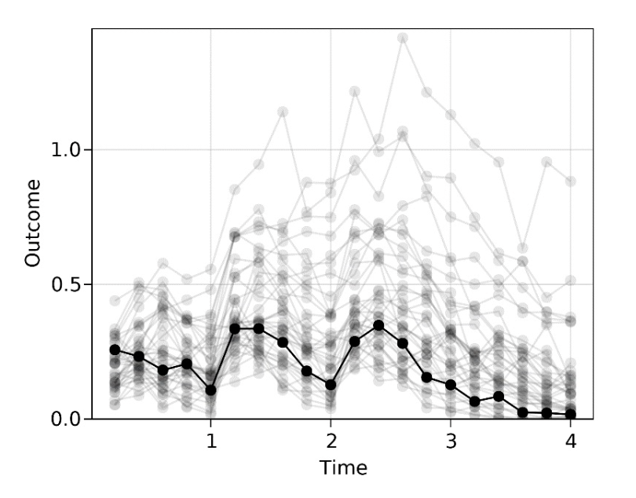
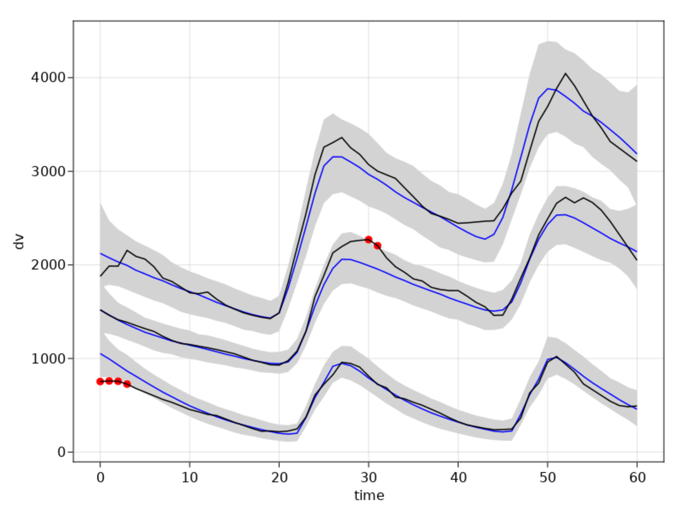

Generative AI and NLME
Connections, Concepts, and Future Directions
2025-10-09
The Connection Between NLME and Generative AI
What is Generative AI?
Goal: Generate synthetic data that is indistinguishable from real data
Examples you’ve seen:
- Images (faces, artwork, medical images)
- Text (ChatGPT, clinical notes)
- Time series (financial data, biomarkers)
Famous Example: Fake Faces
https://www.thispersondoesnotexist.com
These people don’t exist - generated by AI!
Time-Series and Longitudinal Data
PK concentration profiles 
Population predictions 
Generative AI can create realistic longitudinal clinical data!
The Deep Connection
NLME is Generative AI!
NLME objective: Maximize marginal likelihood of observations \(y\) given covariates \(c\):
\[ p_\theta(y | c) = \int p_\theta(y | \eta, c) \cdot p(\eta) d\eta \]
Variational Autoencoder (GenAI) objective: Maximize likelihood of data \(x\):
\[ p_\theta(x) = \int p_\theta(x | z) \cdot p(z) dz \]
They’re identical!
- Random effects \(\eta\) ↔︎ Latent variables \(z\)
- Observations \(y\) ↔︎ Generated data \(x\)
- Individual predictions ↔︎ Generative model
What Are Latent Variables?
In Traditional NLME: Meaning is structurally engineered
\[ CL = tvCL \cdot e^{\eta_1} \]
In DeepNLME: More flexible, but still some structure
\[ \frac{dR}{dt} = NN\left(\frac{Central}{Vc}, R, \eta_1, \eta_2 \right) \]
In Pure GenAI: Meaning emerges from data and training
\[ p_\theta(x) = \int p_\theta(x | z) \cdot p(z) dz \]
\(z\) captures informative properties not directly observed
Latent Variables as Information
For images:
- Not pixel-by-pixel intensity
- Rather: Objects, characteristics, actions, style, lighting
For text:
- Not individual words
- Rather: Sentiment, information content, writing style, language
For clinical data:
- Not individual measurements
- Rather: Disease state, treatment response, patient phenotype
Embeddings as Latent Representations
Embeddings: Dense Information Vectors
- Posterior latent variables tell you how to recreate the data
- Fixed, lower-dimensional representation of complex data
- Inferred latent variables \(z^*\) are called “embeddings”
- Dense, structured information about the original data
- Machine-readable format for downstream tasks
This is exactly what we used earlier with text descriptions!
From VAE Theory to Clinical Practice
DeepNLME Application
- Encoder: Text → Embedding → EBEs
- Decoder: EBEs → Individual predictions
- Shared structure: NLME framework
- Individual variation: Random effects
Practical implementation:
- Pre-trained text models (HuggingFace)
- PCA for dimension reduction
- Neural networks for EBE prediction
- Augmented NLME models
Use Cases and Applications
Clinical Applications
Real examples from clinical practice:
Practical Applications
- Electronic Health Records: Converting clinical notes to structured data
- Medical Imaging: Extracting quantitative features from scans
- Genomics/Proteomics: High-dimensional omics data integration
- Wearables/IoT: Continuous monitoring data processing
- Social Determinants: Free-text survey responses
- Adverse Event Reporting: Unstructured safety narratives
Future Directions
- Multimodal embeddings: Combining text, images, and clinical data
- Foundation models: Pre-trained on large clinical datasets
- Real-time adaptation: Online learning from streaming data
- Causal embeddings: Preserving causal relationships in latent space
- Uncertainty quantification: Probabilistic embeddings
- Privacy-preserving: Federated learning approaches
Key Takeaways
The Unified View
- NLME and GenAI share the same mathematical foundation
- Random effects ≈ Latent variables ≈ Embeddings
- DeepNLME bridges traditional modeling with modern AI
- Embeddings unlock complex covariate information
- Scientific structure provides interpretability and data efficiency
Why This Matters
- Leverage decades of AI research for clinical modeling
- Use pre-trained models instead of starting from scratch
- Handle any type of complex data (text, images, omics)
- Maintain scientific interpretability while gaining flexibility
- Bridge the gap between mechanism and machine learning
Looking Forward
The future of clinical modeling:
Mechanism + Machine Learning + Generative AI
- Rich, complex data sources
- Scientifically grounded models
- Flexible, data-driven components
- Robust uncertainty quantification
- Practical clinical applications
Questions for Discussion
- How can we leverage foundation models in clinical research?
- What are the regulatory implications of GenAI in drug development?
- How do we ensure interpretability while embracing complexity?
- What data types haven’t we considered yet?
- How do we validate models with AI-generated components?
Let’s discuss the future of AI-augmented clinical modeling!

{kind=link}
{kind=link}
{kind=link}
{kind=link}
{kind=link}
{kind=link}
{kind=link}
{kind=link}
{kind=link}